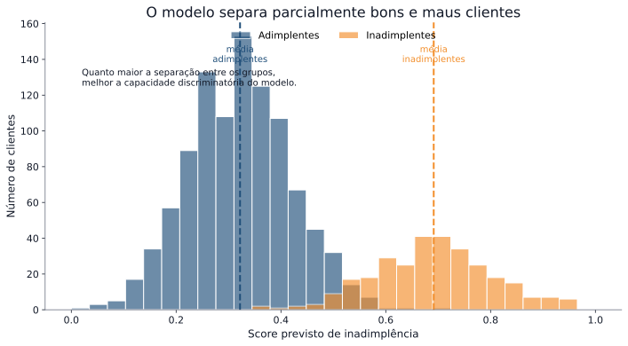
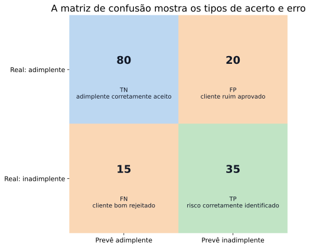
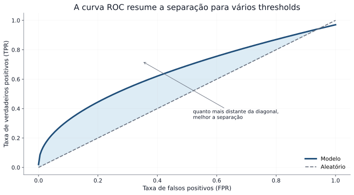

A ideia é formar grupos com comportamento de risco diferente.
Observação importante
Nem toda transformação melhora o modelo.
Precisamos buscar:
faixas interpretáveis
separação entre bons e maus
estabilidade
coerência com o negócio
Em crédito, desempenho e interpretabilidade precisam caminhar juntos.
Aplicando na base em Python
Vamos usar a própria base do curso para:
discretizar variáveis
calcular WoE
observar IV
gerar variáveis transformadas
# Dados faltantes por colunadados.isna().sum().sort_values(ascending=False).head(10)# Duplicatasprint("Número de linhas duplicadas:", dados.duplicated().sum())# Tipos das variáveisdados.dtypes.head(15)
import numpy as npimport pandas as pd# Transformações simples# Log do valor do créditodados["log_credit_amount"] = np.log1p(dados["credit_amount"])# Crédito médio por mêsdados["credit_per_month"] = dados["credit_amount"] / dados["duration"]# Faixas de idadedados["faixa_idade"] = pd.cut( dados["age"], bins=[0, 25, 35, 50, 100], labels=["até 25", "26–35", "36–50", "50+"])dados[["age", "faixa_idade", "credit_amount", "log_credit_amount", "credit_per_month"]].head()
age
faixa_idade
credit_amount
log_credit_amount
credit_per_month
0
67
50+
1169
7.064759
194.833333
1
22
até 25
5951
8.691483
123.979167
2
49
36–50
2096
7.648263
174.666667
3
45
36–50
7882
8.972464
187.666667
4
53
50+
4870
8.491055
202.916667
## Observe o uso do pacote scorecardpyimport scorecardpy as scbase_woe = dados.copy()base_woe["inad"] = base_woe["target"]# Seleção de algumas variáveis para exemplovars_exemplo = ["age","credit_amount","duration","credit_per_month","log_credit_amount","inad"]base_woe = base_woe[vars_exemplo]# Binning automáticobins = sc.woebin(base_woe, y="inad")# Tabela de binsbins["age"]
Basel Committee on Banking Supervision. (2006). International convergence of capital measurement and capital standards: A revised framework. https://www.bis.org/publ/bcbs128.htm
Consumer Financial Protection Bureau. (2022). Adverse action notification requirements in connection with credit decisions based on complex algorithms. https://www.consumerfinance.gov
European Banking Authority. (2017). Guidelines on PD estimation, LGD estimation and treatment of defaulted exposures. https://www.eba.europa.eu
European Banking Authority. (2020). Guidelines on loan origination and monitoring. https://www.eba.europa.eu
Hand, D. J., & Henley, W. E. (1997). Statistical classification methods in consumer credit scoring: A review. Journal of the Royal Statistical Society: Series A, 160(3), 523–541.
Lessmann, S., Baesens, B., Seow, H.-V., & Thomas, L. C. (2015). Benchmarking state-of-the-art classification algorithms for credit scoring. European Journal of Operational Research, 247(1), 124–136.
Cada variável influencia a probabilidade de inadimplência.
O modelo permite entender o efeito de cada característica do cliente.
Atenção: o tamanho dos coeficientes não deve ser comparado diretamente entre variáveis, pois elas podem estar em escalas diferentes.
Para comparações, é necessário padronizar as variáveis ou analisar com cuidado.
Exemplo: renda
Considere a variável renda:
coeficiente negativo
Interpretação:
quanto maior a renda, menor o risco de inadimplência
Ou seja:
clientes com maior renda tendem a ter menor probabilidade de não pagamento
Em modelos de crédito, essa relação também pode ser analisada por meio de odds (chance relativa).
O que são odds?
Odds compara a chance de acontecer com a chance de não acontecer
Exemplo:
probabilidade de inadimplência = 20%
probabilidade de não inadimplência = 80%
Então a odds de inadimplência é:
\[
\text{odds} = \frac{\text{probabilidade de inadimplência}}{1-\text{probabilidade de inadimplência}} = \frac{0,20}{0,80} = \frac{1}{4} = 0,25
\]
Interpretação:
para cada 1 cliente inadimplente, há cerca de 4 adimplentes
Por que não usar odds diretamente?
Odds são úteis, mas:
não variam de forma linear
pequenas mudanças nas variáveis podem gerar variações difíceis de interpretar
Precisamos de uma transformação mais adequada para modelagem.
permite modelar o efeito das variáveis de forma aditiva
isso viabiliza o uso de um modelo log-linear
Interpretando o efeito
Cada coeficiente atua sobre o log-odds de inadimplência.
Na prática:
coeficiente positivo → aumenta o log-odds → aumenta o risco
coeficiente negativo → reduz o log-odds → reduz o risco
Ou seja:
as variáveis influenciam o risco por meio dos log-odds
👉 Mesmo pequenas mudanças no log-odds podem gerar mudanças relevantes na probabilidade.
Relembrando a divisão dos dados
Na Parte 1, separamos a base em conjuntos diferentes.
Agora vamos usar:
treino → para ajustar o modelo
teste → para avaliar o desempenho
Por quê?
o modelo aprende no treino
e é avaliado em dados que não viu antes
isso evita uma avaliação otimista do modelo
Ajustando o modelo no Python
from sklearn.linear_model import LogisticRegression# Transformar variáveis categóricas em numéricasX_train_dum = pd.get_dummies(X_train, drop_first=True)X_test_dum = pd.get_dummies(X_test, drop_first=True)# Garantir mesmas colunas em treino e testeX_train_dum, X_test_dum = X_train_dum.align(X_test_dum, fill_value=0)# Ajustar o modelo usando os dados de treinomodelo_log = LogisticRegression(max_iter=1000)modelo_log.fit(X_train_dum, y_train)# Obter probabilidades de inadimplência no testey_prob_log = modelo_log.predict_proba(X_test_dum)[:, 1]
O que o código faz?
Etapas principais:
transforma variáveis categóricas em numéricas
ajusta o modelo usando os dados de treino
aplica o modelo aos dados de teste
Resultado:
para cada cliente no teste, o modelo retorna uma probabilidade de inadimplência
essas probabilidades serão usadas para avaliar o modelo
Probabilidades previstas
Cada cliente recebe um score:
valor entre 0 e 1
interpretação probabilística
Exemplo:
0,8 → alto risco
0,1 → baixo risco
o modelo quantifica risco, não toma decisão
A distribuição mostra como o modelo diferencia níveis de risco entre os clientes.

Da probabilidade para a decisão
O modelo retorna probabilidades de inadimplência.
Mas precisamos tomar uma decisão:
aprovar
rejeitar
Para isso, usamos um ponto de corte (threshold).
Exemplo:
se probabilidade ≥ 0,5 → classifica como inadimplente
caso contrário → adimplente
o valor 0,5 é uma escolha inicial, não necessariamente a melhor
Classificando os clientes
Ponto de corte (threshold)
# Classificação usando threshold de 0.5y_pred_log = (y_prob_log >=0.5).astype(int)
Matriz de Confusão
from sklearn.metrics import confusion_matrix, ConfusionMatrixDisplaycm = confusion_matrix(y_test, y_pred_log)disp = ConfusionMatrixDisplay(confusion_matrix=cm)disp.plot()plt.title("Matriz de Confusão")plt.show()
transformando probabilidades em classes
definindo quem é considerado inadimplente
agora podemos comparar com a realidade
Matriz de confusão
Queremos comparar o que realmente aconteceu com o que o modelo previu
Prevê adimplente (0)
Prevê inadimplente (1)
Real 0 (adimplente)
acertou cliente bom (VN)
classificou como risco sem ser (FP)
Real 1 (inadimplente)
deixou passar um cliente de risco (FN)
acertou cliente de risco (VP)
Nem todos os erros têm o mesmo impacto:
FP → perda financeira direta
FN → perda de oportunidade
mudar o threshold muda os erros do modelo
Visualização dos acertos e erros do modelo.

Como avaliar um modelo?
Depois de ajustar o modelo, precisamos entender se ele é útil.
Ele consegue separar clientes bons e maus?
As probabilidades estimadas fazem sentido?
Ele ajuda na tomada de decisão?
Em outras palavras:
o modelo distingue bem os perfis?
as previsões são coerentes?
as decisões geradas são adequadas?
métricas são ferramentas para responder essas perguntas
Métricas de avaliação
Para responder essas perguntas, usamos métricas.
acurácia → proporção total de acertos
sensibilidade (recall) → capacidade de identificar inadimplentes
precisão → entre os classificados como inadimplentes, quantos realmente são
Cada métrica destaca um aspecto diferente do desempenho.
a escolha da métrica depende do objetivo da análise
Curva ROC
A curva ROC avalia o desempenho do modelo para diferentes valores de threshold.
Ela relaciona:
TPR (taxa de verdadeiros positivos) → proporção de inadimplentes corretamente identificados
FPR (taxa de falsos positivos) → proporção de clientes bons classificados como inadimplentes
Ou seja:
TPR mede a capacidade de identificar risco
FPR mede o erro com clientes bons
a curva mostra o equilíbrio entre acertos e erros ao variar o threshold
Curva ROC no Python
from sklearn.metrics import roc_curve, roc_auc_scoreimport matplotlib.pyplot as pltfpr, tpr, _ = roc_curve(y_test, y_prob_log)auc = roc_auc_score(y_test, y_prob_log)plt.figure()plt.plot(fpr, tpr, label=f"AUC = {auc:.3f}")plt.plot([0,1], [0,1], linestyle="--")plt.xlabel("FPR (taxa de falsos positivos)")plt.ylabel("TPR (sensibilidade)")plt.title("Curva ROC")plt.legend()plt.show()

AUC (Área sob a curva)
A AUC mede a capacidade do modelo de separar bons e maus clientes.
\[
AUC = P(\text{cliente inadimplente receber maior probabilidade que cliente adimplente})
\]
Ou seja:
escolhemos um cliente inadimplente e um adimplente ao acaso
verificamos se o modelo atribui maior risco ao inadimplente
Basel Committee on Banking Supervision. (2006). International convergence of capital measurement and capital standards: A revised framework. https://www.bis.org/publ/bcbs128.htm
Consumer Financial Protection Bureau. (2022). Adverse action notification requirements in connection with credit decisions based on complex algorithms. https://www.consumerfinance.gov
European Banking Authority. (2017). Guidelines on PD estimation, LGD estimation and treatment of defaulted exposures. https://www.eba.europa.eu
European Banking Authority. (2020). Guidelines on loan origination and monitoring. https://www.eba.europa.eu
Hand, D. J., & Henley, W. E. (1997). Statistical classification methods in consumer credit scoring: A review. Journal of the Royal Statistical Society: Series A, 160(3), 523–541.
Lessmann, S., Baesens, B., Seow, H.-V., & Thomas, L. C. (2015). Benchmarking state-of-the-art classification algorithms for credit scoring. European Journal of Operational Research, 247(1), 124–136.